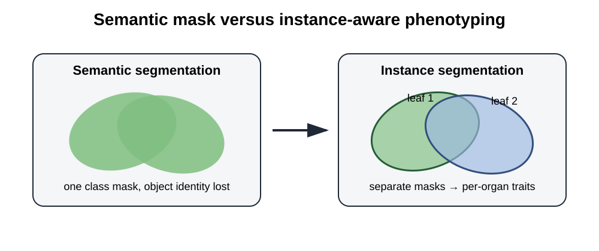

OmniPhenoR Instance Segmentation: Individual Organs, Masks, and Traits
Source:vignettes/v16-instance-segmentation.Rmd
v16-instance-segmentation.RmdPurpose
Semantic segmentation labels pixels by class but does not necessarily preserve object identity. Instance segmentation provides a separate mask for each object. This is essential when the phenotype depends on individual leaves, fruits, seeds, lesions, or overlapping organs. Mask R-CNN is a canonical instance-segmentation framework that couples object detection with an object-specific mask branch (He et al. 2017).

1. Build instances from known masks
m1 <- matrix(FALSE, 60, 80)
m1[8:35, 10:40] <- TRUE
m2 <- matrix(FALSE, 60, 80)
m2[25:55, 45:72] <- TRUE
inst <- pheno_instances(
list(m1, m2),
classes = c("leaf", "leaf"),
confidence = c(.98, .94),
image_id = "plant_A"
)
inst
#> <pheno_instances>
#> instances: 2
#> engine: native
#> image: 60 x 80The canonical object contains a metadata table and a list of masks with common dimensions.
2. Reuse morphology instead of creating a second API
pheno_morphology(inst)
#> # A tibble: 2 × 16
#> instance_id class confidence object_id area_px perimeter_px centroid_x
#> <int> <chr> <dbl> <int> <int> <int> <dbl>
#> 1 1 leaf 0.98 1 868 118 25
#> 2 2 leaf 0.94 1 868 118 58.5
#> # ℹ 9 more variables: centroid_y <dbl>, bbox_width_px <dbl>,
#> # bbox_height_px <dbl>, equivalent_diameter_px <dbl>, circularity <dbl>,
#> # aspect_ratio <dbl>, eccentricity <dbl>, major_axis_px <dbl>,
#> # minor_axis_px <dbl>This is an important design choice. Morphological definitions should
remain stable when the mask source changes. A native threshold mask, an
R torch prediction, or an external instance model can
therefore be measured by the same downstream implementation.
3. Function adapter
mock_instance_model <- function(img) {
a <- matrix(FALSE, 64, 64)
b <- matrix(FALSE, 64, 64)
a[8:32, 5:30] <- TRUE
b[28:58, 35:60] <- TRUE
list(
masks = list(a, b),
classes = c("leaf", "leaf"),
confidence = c(.93, .87)
)
}
pred <- pheno_segment_instances(
matrix(0, 64, 64),
model = mock_instance_model,
image_id = "plant_B"
)
pred
#> <pheno_instances>
#> instances: 2
#> engine: function
#> image: 64 x 64The same adapter interface can wrap a Python model, a local executable, or another R package.
4. Overlapping predictions
Two tiles or two ensemble members may detect the same organ.
pheno_merge_instances(pred, pred, iou_threshold=.8)
#> <pheno_instances>
#> instances: 2
#> engine: merged
#> image: 64 x 64Instance merging uses mask IoU, which is more informative than box IoU when masks are available.
5. Leaf-specific disease severity
A plant-level severity can hide strong within-plant heterogeneity. Instance segmentation allows disease to be quantified per organ.
leaf <- matrix(FALSE, 50, 50)
leaf[5:45, 5:45] <- TRUE
lesion <- matrix(FALSE, 50, 50)
lesion[15:25, 18:30] <- TRUE
leaf_i <- pheno_instances(list(leaf), "leaf", 1)
lesion_i <- pheno_instances(list(lesion), "lesion", 1)
pheno_disease_instances(leaf_i, lesion_i)
#> # A tibble: 1 × 5
#> object_id class leaf_area_px lesion_area_px severity_percent
#> <int> <chr> <int> <int> <dbl>
#> 1 1 leaf 1681 143 8.51The output distinguishes leaf area from lesion area and reports severity as a percentage of each leaf mask.
6. Object identity and pseudo-replication
If ten leaves are measured from one plant, those ten rows are not automatically ten independent experimental replicates. The object hierarchy should remain explicit:
study
└── environment
└── plot
└── plant
└── leaf
└── lesionObject-level data can be valuable for within-plant variability, but treatment inference normally needs the design’s experimental unit.
7. Aggregating to plant level
traits <- pheno_morphology(inst)
traits$plant_id <- "plant_A"
pheno_aggregate_traits(
traits,
by = "plant_id",
traits = c("area_px", "circularity"),
functions = c("mean", "median", "sum")
)
#> # A tibble: 1 × 8
#> plant_id n_objects area_px_mean area_px_median area_px_sum circularity_mean
#> <chr> <int> <dbl> <dbl> <dbl> <dbl>
#> 1 plant_A 2 868 868 1736 0.783
#> # ℹ 2 more variables: circularity_median <dbl>, circularity_sum <dbl>For circularity, a sum is usually not scientifically
meaningful; this example deliberately illustrates why aggregation
functions must be selected trait by trait rather than automatically.
8. Failure modes
Touching leaves
A segmentation model may merge two leaves into one mask. Detection metrics can still look good if the bounding box is approximately correct, while leaf count and individual area are wrong.
Fragmentation
One leaf can be split into several masks, inflating counts and changing the area distribution.
9. Validation targets
For instance phenotyping, validate at several levels:
- object detection recall;
- one-to-one object matching;
- mask IoU/Dice;
- count bias;
- individual trait bias;
- plant-level aggregated trait bias.
An improvement at one level does not guarantee an improvement at another.
10. Reporting language
State whether morphology was calculated on visible masks or reconstructed masks, how duplicate instances were merged, what confidence threshold was used, how partial objects were treated, and how object-level measurements were aggregated to the experimental unit.
Final perspective
Instance segmentation is the bridge between modern computer vision and organ-level phenotyping. OmniPhenoR makes that bridge explicit by preserving one mask per object and reusing common morphology, disease, identity, and validation tools.